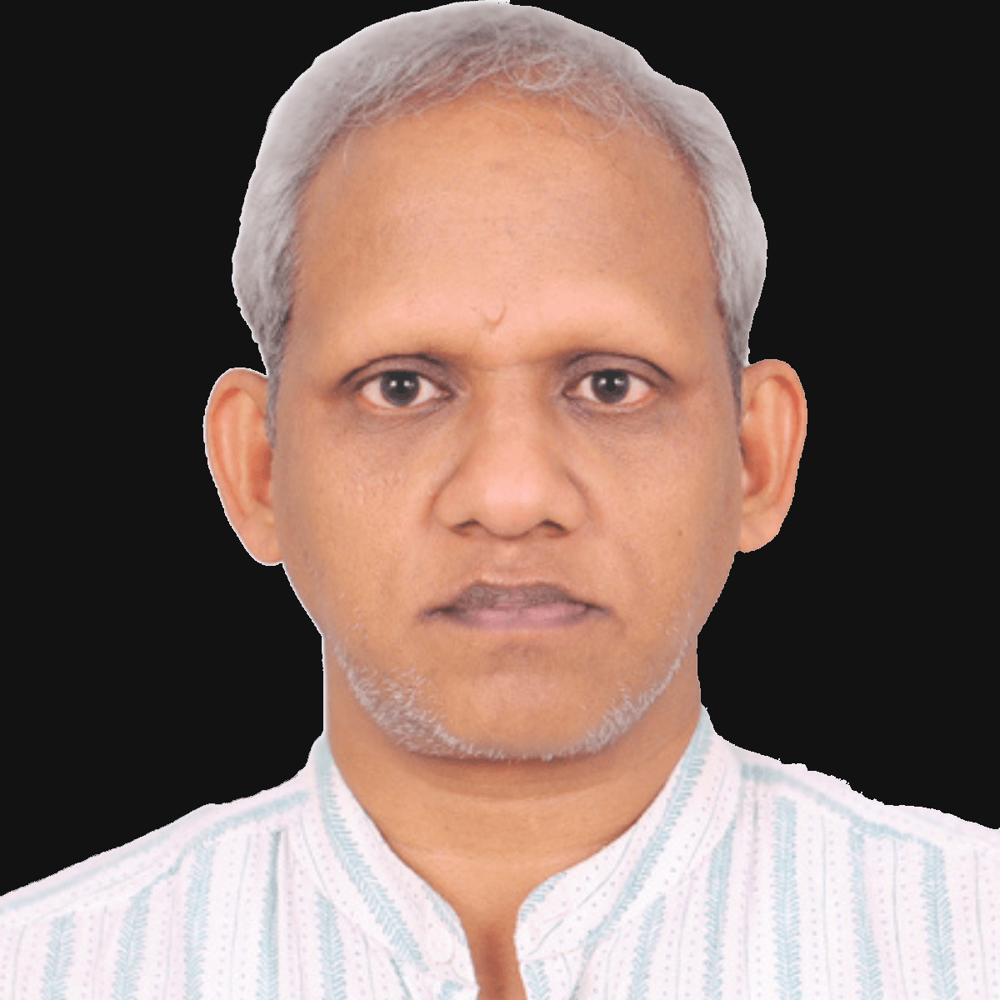

I am a Professor at the School of Digital Sciences, Digital University Kerala, specializing in computational chemistry and machine learning.
I previously served as an Assistant Professor (2010-16) and later as Associate Professor (2016-23) at the Indian Institute of Technology Kharagpur. I conducted postdoctoral research under Prof. Walther Thiel at the Max-Planck Institut für Kohlenforschung (2006-09) and Prof. Frank Neese at University of Bonn, Germany (2009-10). I completed PhD from the University of Hyderabad under Prof. E. D. Jemmis. Read more ...
My research explores the complex chemical space of novel molecular structures and reactions using computational techniques and machine learning. You can find our group's publication on any of the following profiles: ORCID, Publons, Scopus, Google Scholar, and ResearchGate. Our codes are available on GitHub. Read more ...
I serve as an Associate Editor for the Journal of Molecular Graphics and Modelling and as a subject editor for the Indian Journal of Chemistry. I am a member of professional organizations, including the National Academy of Sciences India, the Chemical Research Society of India, and the World Association of Theoretical and Computational Chemists (WATOC). I also serve on the Board of Studies at Kannur University and Nirmala College (Autonomous).
Feel free to reach out via email at anoop.a@duk.ac.in or connect with me on social media: